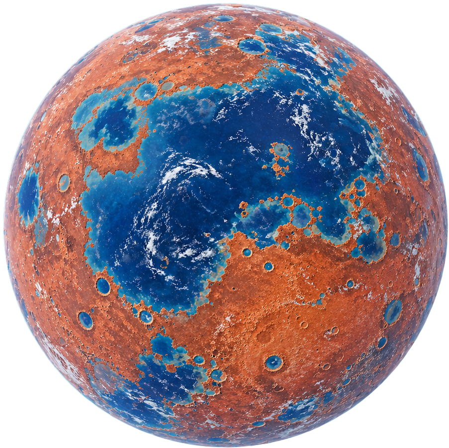
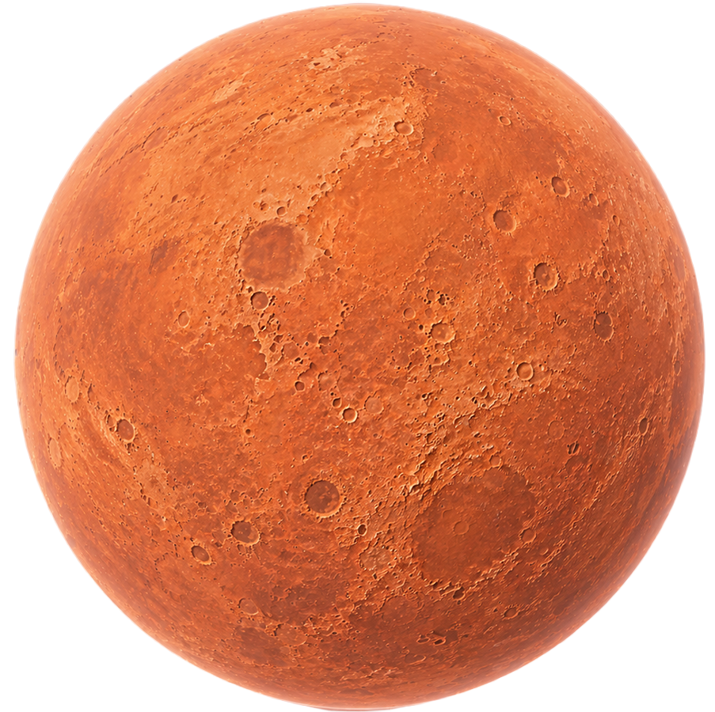
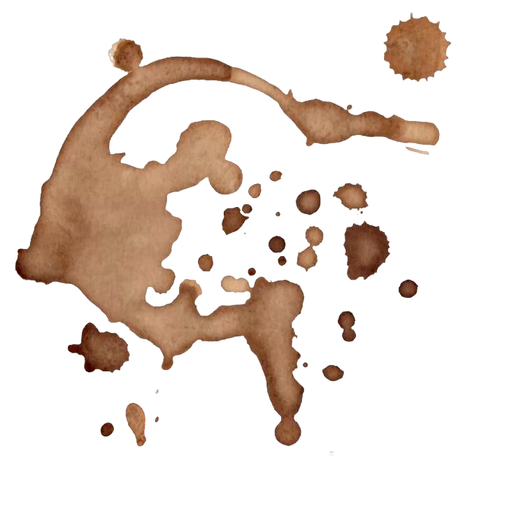

Magnetic-Coupled Photoprotein Engineering
透過合成生物技術，將螢光素酶（Luciferase）與火星微弱的全球磁脈動進行「頻率鎖定」。當海中的基改合成藍藻感應到地磁變化時，會觸發離子通道開放，產生發光反應。
即時調整海水的養分濃度（觸媒噴灑）以維持亮度恆定。讓這片海洋帶有電壓干擾感的呼吸節奏。
Phased-Array Sonic Precipitation
利用部署在軌道上的衛星陣列，向大氣層發射精準的超音波束。這些聲波產生的物理振動會強迫懸浮在冷空氣中的微米級冰晶相互碰撞、合併，克服火星低重力落成雨滴。
降雨系統宛如一個巨大的音響，讓水滴落下的頻率帶有「磁帶刮痕」的物理停頓感。
Reactive Neuro-Architecture
飛船內壁由「智能液態金屬纖維」組成，與乘員的腦電波傳感器連動。系統會根據區域內的心理壓力，自動調整牆面的透明度、光線折射率與空間幾何維度。
這是社交避難演算法。當感測到有人進入尷尬狀態時，牆面會自動產生折射偏轉，創造出物理意義上的「視線死角」。
Controlled Plasma Resonance Luminescence
由於火星缺乏強磁場保護，AI ��署了數萬個微型電離層導航衛星。這些衛星向大氣高層發射無線電波，激發稀薄的氣體原子產生電漿化反應。副產品是讓天空產生類似極光的發光現象。
拖動上方示波器曲線，手動調整頻率以改變天空的色彩頻段。
Quantum Probabilistic Inversion
在量子計算機中運行數億個火星地球化的平行現實。當模擬陷入對稱性破缺的死循環時，需要引入一個完全不可預測的外部隨機源（Seed of Chaos）來打破邏輯僵局。
系統已陷入 ERROR: LOGIC LOOP。
請點擊背景錯誤代碼注入混亂變量。

Multi-modal Latent Space Navigation
透過 AGI 理解人類的抽象情感。技術不再是寫 Code，而是透過「權重調節（Weight Tuning）」，將人類的感官偏見映射到 AI 的潛在空間中，確保技術發展不會偏離人性的底色。
一切始於這張帶有咖啡漬的藍圖。將滑鼠懸停於咖啡漬上，觀察其在纖維間的擴散。